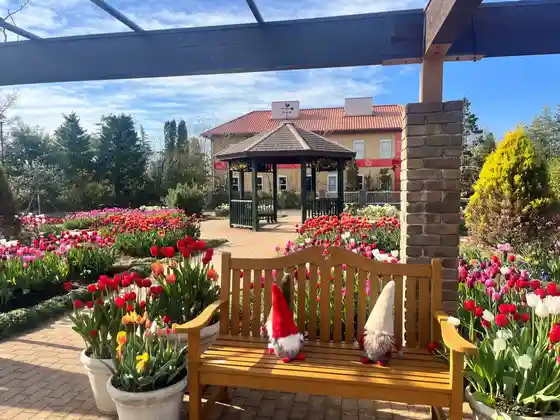
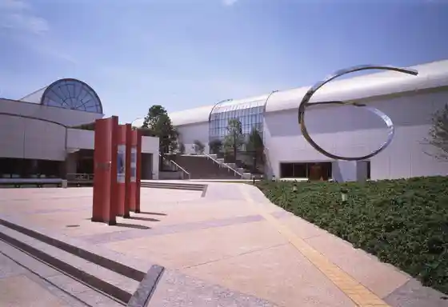
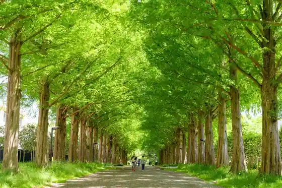
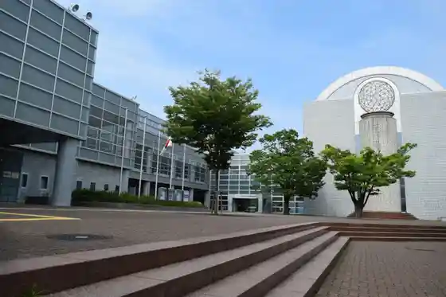

Hanana Garden (Kanagawa Prefectural Hana to Midori no Fureai Center)
Hiratsuka, Kanagawa · 0463-73-6170 · Official / source link

Hiratsuka Art Museum
Hiratsuka, Kanagawa · 0463-35-2111 · Official / source link

Hiratsuka General Park
Hiratsuka, Kanagawa · 0463-35-2233 · Official / source link

Totsugaisekyuritei Hiratsuka Sogo Gym
Hiratsuka, Kanagawa · 0463-35-2255 · Official / source link

Yoshizawa Hakkei
Hiratsuka, Kanagawa · 0463-20-5110 · Official / source link
Hi Yatsu no Oka (Fujisan no Yushi)
Hiratsuka, Kanagawa · 0463-20-5110 · Official / source link
Shonan Taira (Korai Yama Park)
Hiratsuka, Kanagawa · 0463-21-9852 · Official / source link
Nichi Yuki Miya Shrine Tateishi
Hiratsuka, Kanagawa · 0463-20-5110 · Official / source link
Komyo Jikan Oto Do (Kaneme Kannon)
Hiratsuka, Kanagawa · 0463-58-0127 · Official / source link
Matsu Iwa Tera
Hiratsuka, Kanagawa · Official / source link
Tsukagoshi Park
Hiratsuka, Kanagawa · Official / source link
Yatsurugi Shrine (Kanman Fudo)
Hiratsuka, Kanagawa · Official / source link
Myo En Tera (Tsuchiya Zeniarai I Benzaiten)
Hiratsuka, Kanagawa · 0463-58-1436 · Official / source link
Tentoku Tera
Hiratsuka, Kanagawa · Official / source link
Tsuchiya Zaru Kiku Sono
Hiratsuka, Kanagawa · 0463-20-5110 · Official / source link
Shonan Sukaisupotsusukuru
Hiratsuka, Kanagawa · Official / source link
Shonan Kaigan Park (SunSun Marushie Kaisaibasho)
Hiratsuka, Kanagawa · 0463-20-5110 · Official / source link
Hiratsuka Oki Sogo Jikken Tawa (Tokyodaigaku Kaiyo Araiansu)
Hiratsuka, Kanagawa · 0463-73-7690 · Official / source link
ABEMA Shonan Banku (Hiratsuka Keirinjo)
Hiratsuka, Kanagawa · 0463-21-3935 · Official / source link
Ishikkusu Umairi no O Hanahata
Hiratsuka, Kanagawa · Official / source link
F. Doriimu Hiratsuka
Hiratsuka, Kanagawa · 0463-24-3786 · Official / source link
Hiratsuka Hachiman Shrine
Hiratsuka, Kanagawa · 0463-23-3315 · Official / source link
Yahatayama Park
Hiratsuka, Kanagawa · 0463-21-9852 · Official / source link
Yahatayama no Yokan (Kyu Yokohamagomu Hiratsuka Seizosho Memorial Museum)
Hiratsuka, Kanagawa · 0463-35-7114 · Official / source link
Arai Daruma Ya Daruma no Etsuke Ke Experience
Hiratsuka, Kanagawa · 0463-21-6096 · Official / source link
Kirifuri Ri Falls (Hiratsuka Hakkei)
Hiratsuka, Kanagawa · 0463-35-8107 · Official / source link
Shichi Kuni Toge Endo Hara
Hiratsuka, Kanagawa · Official / source link
Hiratsuka Coast
Hiratsuka, Kanagawa · Official / source link
Hiratsuka Shinko
Hiratsuka, Kanagawa · Official / source link
Umairi Ohashi Shuhen (Shonan Itako)
Hiratsuka, Kanagawa · 0463-35-8107 · Official / source link
Yoshizawa Hakkei (Yoshizawa no Sato Ike)
Hiratsuka, Kanagawa · Official / source link
Yoshizawa Hakkei (Yoshizawa Shogakko)
Hiratsuka, Kanagawa · Official / source link
Yoshizawa Hakkei (Yurugi no Oka)
Hiratsuka, Kanagawa · Official / source link
Yoshizawa Hakkei (Megumiga Oka)
Hiratsuka, Kanagawa · Official / source link
Darumaya Kyozome Main Shop (Kimo no Arai Hari Experience)
Hiratsuka, Kanagawa · Official / source link
Hiratsuka Museum
Hiratsuka, Kanagawa · 0463-33-5111 · Official / source link
Fureai Zoo
Hiratsuka, Kanagawa · 0463-35-2266 · Official / source link
Remongasusutajiamu Hiratsuka (Hiratsuka Kyogijo)
Hiratsuka, Kanagawa · 0463-33-4455 · Official / source link
Asatsuyu Plaza
Hiratsuka, Kanagawa · 0463-59-8304 · Official / source link
O Kiku Tsuka
Hiratsuka, Kanagawa · Official / source link
Edo Kuchi Mitsuke no Ato
Hiratsuka, Kanagawa · Official / source link
Hiratsuka Yado Wakimoto Jin'ato Hi
Hiratsuka, Kanagawa · Official / source link
Ba Ato
Hiratsuka, Kanagawa · Official / source link
Hiratsuka Yado Honjin Kyuseki
Hiratsuka, Kanagawa · Official / source link
Kyogata Mitsuke no Ato
Hiratsuka, Kanagawa · Official / source link
Hiratsuka no Tsuka
Hiratsuka, Kanagawa · Official / source link
Kanagawaken Kankyo Kagaku Center
Hiratsuka, Kanagawa · 0463-24-3311 · Official / source link
Shonan Wa Kasa Ei Yu
Hiratsuka, Kanagawa · 090-8340-3475 · Official / source link
Kaneme Shinsui Park
Hiratsuka, Kanagawa · 0463-21-9852 · Official / source link
Makie Workshop NAMIKI (PILOT)
Hiratsuka, Kanagawa · 0463-35-7069 · Official / source link
Kiiroiochi farm
Hiratsuka, Kanagawa · 0463-79-5156 · Official / source link
O Dashi to Gin Shari Chuka Soba Arata
Hiratsuka, Kanagawa · 0463-26-8376 · Official / source link
Taka Jin Shoten
Hiratsuka, Kanagawa · 0463-21-0899 · Official / source link
Shonan Kurieiteibugato Ashi Hiratsuka Eki Nishiguchi Main Shop
Hiratsuka, Kanagawa · 0463-22-1102 · Official / source link
Umibe no Park (Hiratsuka Shiiterasu)
Hiratsuka, Kanagawa · Official / source link
Oyako de Riaru Ryoshi Experience
Hiratsuka, Kanagawa · 0463-21-0146 · Official / source link
PEPPER'S DRIVE-IN
Hiratsuka, Kanagawa · 0463-54-2202 · Official / source link
Mitsui Shoppingu Park Rarapoto Shonan Hiratsuka
Hiratsuka, Kanagawa · 0463-73-8300 · Official / source link
Ji Autoretto Shonan Hiratsuka (THE OUTLETS SHONAN HIRATSUKA)
Hiratsuka, Kanagawa · 0463-51-2500 · Official / source link